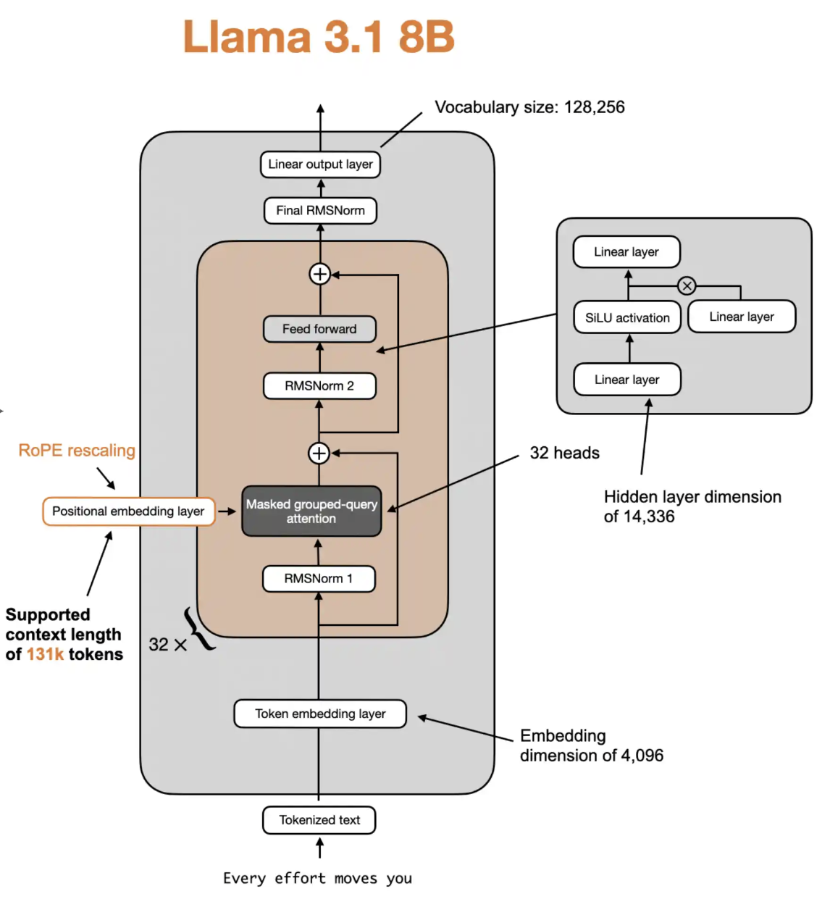

This article covers the math and matrix shapes of the Llama3 architecture.
Below is a diagram showing the Llama 3.1 8B architecture, which is a "dense" transformer

| Variable | Description | Dimensions |
|---|---|---|
| $W_{\text{embeddings}}$ | Token embedding matrix | $(V, d)$ |
| $w_{a,\ell}, w_{b,\ell}$ | RMSNorm scale parameters (layer $\ell$) | $(d,)$ |
| $W_{q,\ell}, W_{k,\ell}, W_{v,\ell}$ | QKV projection weights (layer $\ell$) | $(d, d)$ |
| $W_{o,\ell}$ | Output projection weights (layer $\ell$) | $(d, d)$ |
| $W_{\text{gate},\ell}, W_{\text{up},\ell}$ | FFN gate/up weights (layer $\ell$) | $(d, 4d)$ |
| $W_{\text{down},\ell}$ | FFN down weights (layer $\ell$) | $(4d, d)$ |
| $W_{\text{lm}}$ | Language model head | $(d, V)$ |
| $w_{\text{final}}$ | Final RMSNorm scale parameters | $(d,)$ |
Where $\ell$ = layer index ($\ell = 1, 2, \ldots, L$)
| Variable | Description | Dimensions |
|---|---|---|
| $S$ | Token sequence (input IDs) | $(s,)$ |
Where: - $s$ = sequence length - $d$ = model dimension (hidden size) - $V$ = vocabulary size
| Step | Math Formulas and Shapes |
|---|---|
| 1. Input Embedding | Let tokens be $S: (s)$ $X = \mathrm{Embed}(S) = W_{\text{embeddings}}[S]$ $(s) \mapsto (s, d)$ (Equivalent to treating $S$ as one-hot and multiplying by $W_{\text{embeddings}}$ for exposition.) |
| 🔄 Repeat steps 2-11 for layers $\ell = 1..L$ | |
| 2. Pre-RMSNorm (Attention) | Define $\mathrm{RMSNorm}(x; w) = \dfrac{x}{\sqrt{\mathrm{mean}(x^2) + \epsilon}} \odot w$ $X_{\text{attn in}} = \mathrm{RMSNorm}(X; w_{a,\ell})$ $(s, d) \odot (d) \to (s, d)$ |
| 3. QKV Projections | $Q = X_{\text{attn in}}W_{q,\ell}$ $K = X_{\text{attn in}}W_{k,\ell}$ $V = X_{\text{attn in}}W_{v,\ell}$ $(s, d) \times (d, d) \to (s, d)$ Reshape: $Q,K,V \;\mapsto\; (s, n_h, d_h),\quad d = n_h \cdot d_h$ Where: $n_h$ = number of attention heads, $d_h$ = attention head dimension |
| 4. RoPE Embeddings | Apply RoPE along the last (head) dimension for each head: $Q_h = Q_h \odot \cos + \mathrm{rotate}(Q_h)\odot \sin$ $K_h = K_h \odot \cos + \mathrm{rotate}(K_h)\odot \sin$ $(s, d_h) \to (s, d_h)\ \text{per head}$ |
| 5. Multi-Head Attention | Compute attention scores, weights, and context per head: $S_h = \frac{Q_h K_h^\top}{\sqrt{d_h}} + M \quad \text{(attention scores)}$ $A_h = \mathrm{softmax}(S_h) \quad \text{(attention weights)}$ $C_h = A_h V_h \quad \text{(attention context)}$ Concatenate heads: $C = \mathrm{concat}_h(C_h) \in \mathbb{R}^{s \times d}$ Causal mask: $M[i,j] = 0$ if $j \leq i$, else $M[i,j] = -\infty$ |
| 6. Attention Output Projection | $X_{\text{attn out}} = C\, W_{o,\ell}$ $(s, d) \times (d, d) \to (s, d)$ |
| 7. Residual (Attention) | $X_{\text{attn out res}} = X + X_{\text{attn out}}$ $(s, d) + (s, d) \to (s, d)$ |
| 8. Pre-RMSNorm (FFN) | $X_{\text{ffn in}} = \mathrm{RMSNorm}(X_{\text{attn out res}}; w_{b,\ell})$ $(s, d) \odot (d) \to (s, d)$ |
| 9. SwiGLU FFN | $U = X_{\text{ffn in}} W_{\text{up},\ell}$ $G = X_{\text{ffn in}} W_{\text{gate},\ell}$ $X_{\text{ffn out}} = (\mathrm{SiLU}(G)\odot U)\, W_{\text{down},\ell}$ $((s, 4d) \odot (s, 4d)) \times (4d, d) \to (s, d)$ Where $\mathrm{SiLU}(x) = x \odot \sigma(x) = \dfrac{x}{1 + e^{-x}}$ |
| 10. Residual (FFN) | $X_{\text{ffn out res}} = X_{\text{attn out res}} + X_{\text{ffn out}}$ $(s, d) + (s, d) \to (s, d)$ |
| 11. Layer Output | Feed output into next layer: $X = X_{\text{ffn out res}}$ |
| End of transformer blocks | |
| 12. Final RMSNorm | $X_{\text{final}} = \mathrm{RMSNorm}(X; w_{\text{final}}) = \frac{X}{\sqrt{\mathrm{mean}(X^2) + \epsilon}} \odot w_{\text{final}}$ $(s, d) \odot (d) \to (s, d)$ |
| 13. Logits | $\text{logits} = X_{\text{final}} W_{\text{lm}}$ $(s, d) \times (d, V) \to (s, V)$ Some implementations tie $W_{\text{lm}} = W_{\text{embeddings}}^T$ |
| 14. Output Generation | Greedy Decoding: $\text{next token} = \arg\max_i \text{logits}_i$, $(s, V) \to (s,)$ Temperature Sampling: $p_i = \frac{\exp(\text{logits}_i / T)}{\sum_j \exp(\text{logits}_j / T)}$, $(s, V) \to (s, V)$ $\text{next token} \sim \text{Categorical}(p)$, $(s, V) \to (s,)$ Top-k Sampling: $\text{top-k logits} = \text{top}_k(\text{logits})$, $(s, V) \to (s, k)$ $p_i = \frac{\exp(\text{top-k logits}_i / T)}{\sum_j \exp(\text{top-k logits}_j / T)}$, $(s, k) \to (s, k)$ $\text{next token} \sim \text{Categorical}(p)$, $(s, k) \to (s,)$ Where $T$ = temperature, $k$ = number of top tokens |
Batching: Real code operates on batches (the B dimension), while the math above presents a single sequence with $X$ having shape $(s,d)$. In practice, $X$ would have shape $(B, s, d)$ and this extra leading dimension is broadcast throughout all operations.
Multi-Head Attention: The math presents $Q, K, V \in \mathbb{R}^{s \times d}$ but implementations reshape to heads, e.g. $(B, s, n_h, d_h)$, compute per-head attention, concatenate back to $(B, s, d)$, then apply $W_o$.
KV Caching: For autoregressive decoding, implementations keep running key/value caches across steps so each new token only attends to previously cached states. The math shows full-sequence recomputation and omits caching; in practice logits are often computed just for the last position, with shape $(B, 1, V)$.
Grouped Query Attention (GQA): Implementations may use fewer $K/V$ heads than $Q$ heads and repeat or map $K/V$ across query-head groups. The math assumes the same number of heads for $Q, K, V$.
Note: Practical code implementation also includes details such as masking/padding mechanics, numerical-stability tricks (e.g., fused softmax with max-subtraction, epsilon clamps), device/dtype management, and kernel/layout choices for speed.